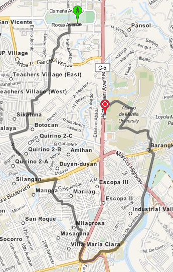
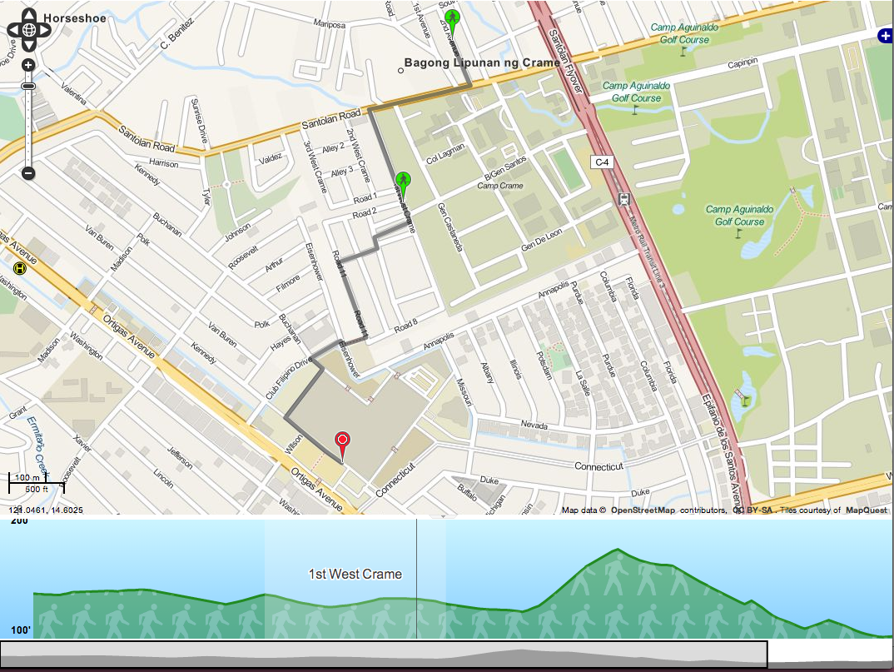

Jeep and Bus Schedules Posted: 2013-07-28 16:26
Wouldn't it be wonderful if there were no buses or jeepneys in the Philippines over the weekends? It would truly be a cyclist's paradise. Imagine biking along EDSA, normally that would be a death sentence, but according to the GTFS data, you shouldn't worry. I can assure you, it's still a death sentence.
The GTFS spec defines 2 ways of statically specifying trip schedules. You can define the exact times that a service will arrive at a stop. You can also specify between what times the service is active and how often a new bus or jeep leaves the first stop. You also define which days those rules apply. You could say every MWF, the bus operates from 9:00AM to 9:00PM and every TTH, the bus services from 3:00AM to 11:00PM.
This should be sufficient in theory, but real world conditions like traffic or the weather could throw the schedules off. To solve this, there's another spec, GTFS-realtime. This allows transit agencies to push temporary schedule updates and service announcements.
Like much everything else about the Philippine transit system, there aren't really any "schedules" to speak of. It's generally whenever the buses or jeeps feel like it. So we have no static schedules. We don't have a central agency or the tracking technology to make it feasible to push updates via GTFS-RT.
Ideally, we shouldn't bother inputting the schedule information into GTFS. Only the route data is really important for jeeps and buses. However, the schedule information is required in the GTFS, and routing apps wouldn't work without it. So we have to add a reasonable trip schedule for jeeps and buses.
The current GTFS data does define these trip schedules. We assume that jeeps and buses operate between 6:00AM and 11:00PM and a new jeep passes by every 10 minutes. Also, jeeps and buses are defined to only operate on weekdays.
While there might be jeeps who change routes or don't operate on weekends, I'm pretty sure that jeeps and buses run on weekends. We'll have to fix it ourselves temporarily since there's no central GTFS feed yet.
# 724594 seems to be the service id used by jeeps and buses sed -i .bak '/^724594/ s/0,0/1,1/' calendar.txt
Another thing we could do is to adjust the time between buses, although the improvement is arguable. With the current 10 minutes between jeeps, it might provide some routes a significant advantage just because the timing is right. So you might get differing route suggestions depending on what time you planned the route. This makes sense when you're sure what the times are, so you can minimize the wait, but with jeeps, you never really know how long the wait will actually be.
If we set the frequency to one minute, it might give better routes by eliminating the timing issue. Or not, it's kind of hard to tell.
# jeep and bus route ids tend to start with 72 sed -i .bak '/^72/ s/,600/,60/' frequencies.txt
Overall, the problems we're having is a symptom of the mismatch between our transit system and the GTFS. It would be great if our transit system gets better and we don't need to do hackish things for it to fit the GTFS, but that's still a dream. For now, all we can really do is fit a triangle into a square hole.
Highways in OTP Posted: 2013-07-24 23:15
One of the weird things that happens with OTP is sometimes it gives absurdly roundabout routes. Here is OTP's suggested route for walking from UP to Ateneo:

This is just so hilariously wrong. It's much simpler to just walk along Katipunan Avenue.
OTP couldn't possibly be that dumb though, so there must be something we're doing wrong. If you notice, Katipunan Avenue is colored red compared to the other streets. OTP seems to be avoiding any path that goes along Katipunan Avenue. The problem might have something to do with the "road type" designated to Katipunan.
Apparently, by default OTP will consider roads of type trunk to be non-walkable and non-bikable. This is documented in the OpenStreetMap wiki and the OTP wiki as well. There are actually multiple ways to go about this then. The first solution that came to mind was to just edit the original OSM XML file.
sed -i .bak s/trunk/primary/g manila.osm
And rebuild the graph. It doesn't really matter much because the OSM data isn't used to render the maps. It's just used to build the routing data. This is actually what I did for maps.pleasantprogrammer.com.
It's also possible to set the default way properties in OTP. Instead of disallowing walking and biking on highway=trunk we could allow that. This is not much better than the sed solution though. It's better since you keep the weighting done by OTP, but you're still saying that all trunks are walkable which might not be the case.
The most correct way to actually fix this is to go through each of the trunks and specifying foot=yes and bicycle=yes for those trunks that are actually walkable. You could either do this locally with the dumped data, or contribute it directly to OSM. I'm not sure on the particulars with updating OSM though.
Elevation Data in OTP Posted: 2013-07-23 18:23

One thing I hadn't tested out last time was OTP's support for elevation data. It makes use of this by showing the elevation you have to traverse while walking along the suggested route. It can also take it into account when suggesting bike routes.
The 5 minute tutorial actually discusses the elevation data briefly, but a more in-depth thing you can look at is the GraphBuilder documentation. It suggests using the ASTER dataset which is free but requires registration. I just opted to use the SRTM data available from the PhilGIS website.
I don't know about the ASTER dataset, but the PhilGIS data was in the ERDAS img format. OTP only supports GeoTIFF so there was a need to convert it beforehand. You can use GDAL for this. You'd just then run,
gdal_translate srtm41_90m_phl.img phil.tiff
Afterwards, it's just a matter of following the OTP instructions on using a local elevation dataset. The process actually doubled the size of the generated Graph.obj so it might not be ideal if you're running on limited RAM.
I've actually hosted a working example. It's pretty much at the limits of the RAM so it might be slow and unreliable, but you can test it out just for fun. Please don't abuse it though.
GraphServer Posted: 2013-07-23 14:48
Link: http://graphserver.github.io/graphserver/
One other routing webapp I saw was GraphServer. It's actually more of a general purpose Graph library which supports GTFS and OSM data than an actual dedicated routing software like OpenTripPlanner. It's also based off python and C instead of Java, so it feels a lot less heavy.
The instructions on the website are already pretty good. There are just some minor errors with it. Where it says gs_gtfsdb_build, you should actually use gs_gtfsdb_compile. Also, when running gs_osmdb_compile you might need to use -t for tolerant in case you follow the instructions on chopping up the original OSM data.
A nice suggestion from the GraphServer instructions was to crop the OSM data to minimize the graph size. This is actually quite helpful if you downloaded the entire Philippine OSM dump. It reduced the original 900MB file to 135MB which was a lot more workable. I did hit a problem with their instructions though. The linked version of osmosis is an old one, which doesn't support 64-bit ids. The latest version of Osmosis easily did the job though.
The actual routing though, was not exactly good. I only tried one route which should normally take 1-2 transfers, it suggested a route which involved 4+ transfers. It also didn't provide any alternate routes aside from that one. I'm not sure if it's a limitation of the provided routeserver, but I didn't bother checking if it supported parameters which might provide better routes.
I think graphserver could be useful, but it seems more involved than say OpenTripPlanner. There do seem to be people who use graphserver for their routing apps, but for the bounds of the contest, or just as a side project, it might require too much effort.
Transit Wand Posted: 2013-07-15 22:45
Link: http://transitwand.com
Overall, this was the simplest of the open-source transit tools to actually get up and running. There's already a deployed instance of the server, and you can easily download the phone app via the Play Store. Even running the server by yourself didn't have any of the hiccups I had with GTFS Editor.
The phone app is actually quite simple. It allows you to capture a trip, which will record your GPS coordinates as you ride public transit. It also allows you to mark points of the trip where you stop and also how long the stop took. Lastly, it allows you to record embarking and disembarking passengers which is potentially useful for ridership data.
After doing a capture session, you can review the data on the phone. It will plot out the route on a map, with markers for the stops. You then either delete the data if it looks wrong, or you can upload it to the Transit Wand server. Uploading involves registering an account, but it's free and you don't even actually need to put in a username or anything. It simply registers the phone's IMEI on the server and gives you a 6-digit identifier.
You can then use the 6-digit identifier to view the data on Transit Wand's server, which is good since uploading any data automatically deletes it from the phone. There really isn't much else you can do with it though. It just allows you to view the data, and export it as a Shapefile.
As is, this is purely a data collection client-server app. Barring looking at the database, there is no way to get a list of phones which have collected data. Only the person who initiated the data collection knows the 6-digit code to view their data. There's also no way to extract the ridership information from the server yet. This isn't to say that the data won't eventually go public though.
An interesting thing you can do with the Transit Wand data is import it into GTFS Editor to make a new route. You don't even have to manually download and upload the data. Just type in your 6-digit identifier and it will give you a list of routes you've captured via Transit Wand. This is wonderful as you get all the stop data, as well as the shape of the route.
I imagine these two tools were how the DOTC came up with all the GTFS data we have now. What I don't understand is why the shape data isn't present. Importing from Transit Wand already gets you shape data. There are even facilities to edit the shape within the editor if clean up is necessary. The only problem I saw was the fact that you can't easily move stops, you have to input coordinates to change the position.
It might also be possible that when the DOTC was still collecting the data, the route collection or editing features weren't present yet. That would just be lame and depressing though.
Overall, Transit Wand does what it's supposed to do. You collect data, and then upload it to a server. There is a lot of room for improvement though. It would be nice to have a better API that allows access to more of the data. Building in analysis tools for the ridership data might also be a welcome thing. I imagine it would also be great if you could encourage people to use the app and upload their own trips.